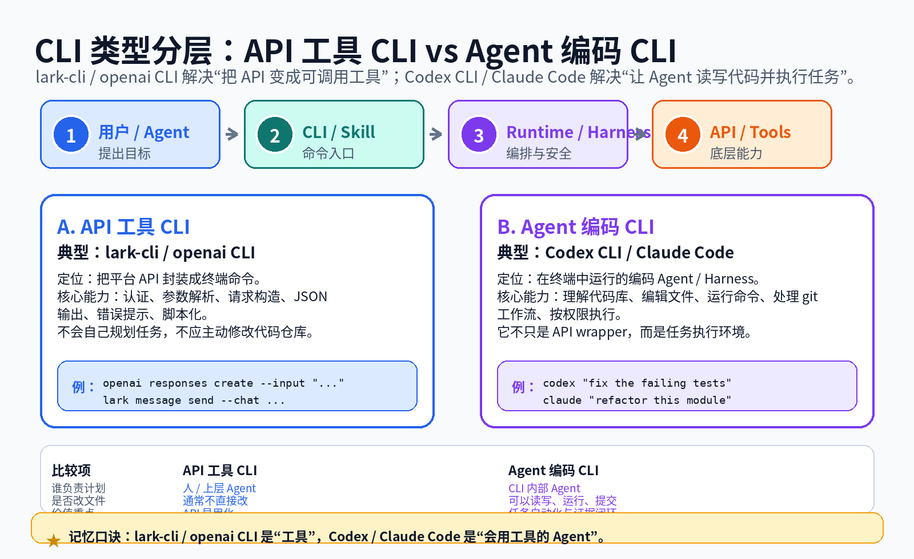
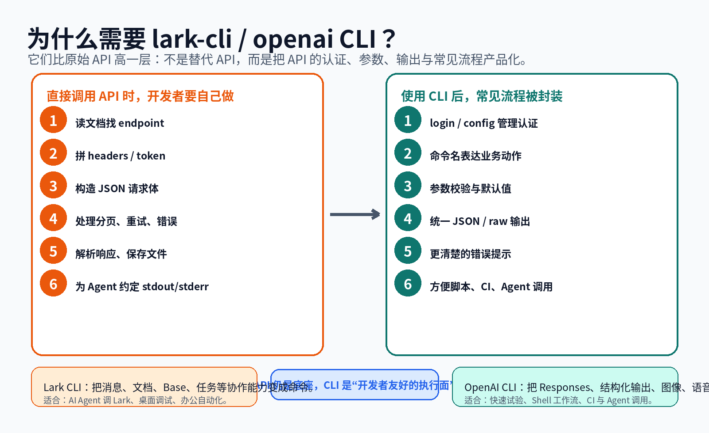
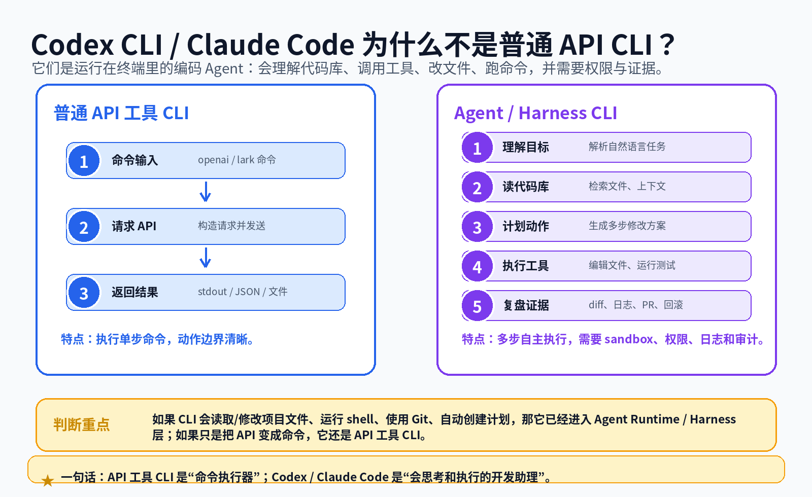
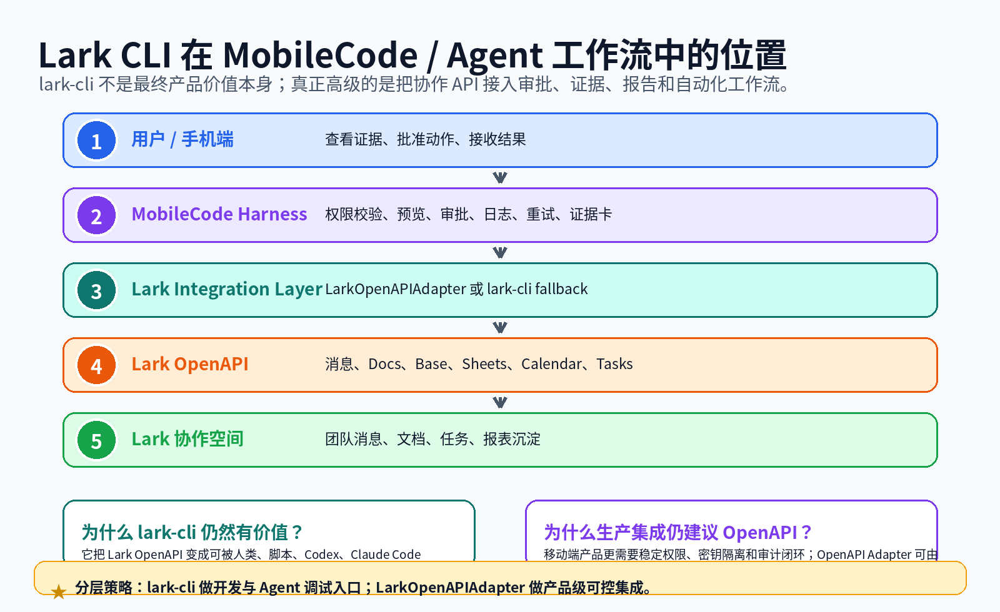
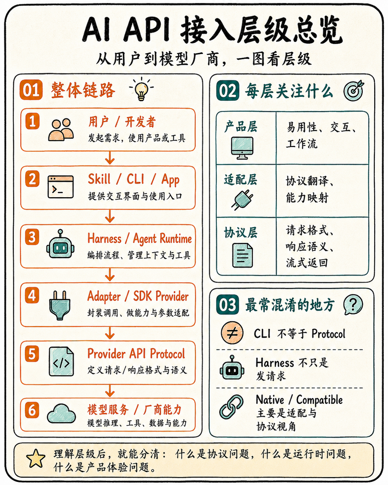
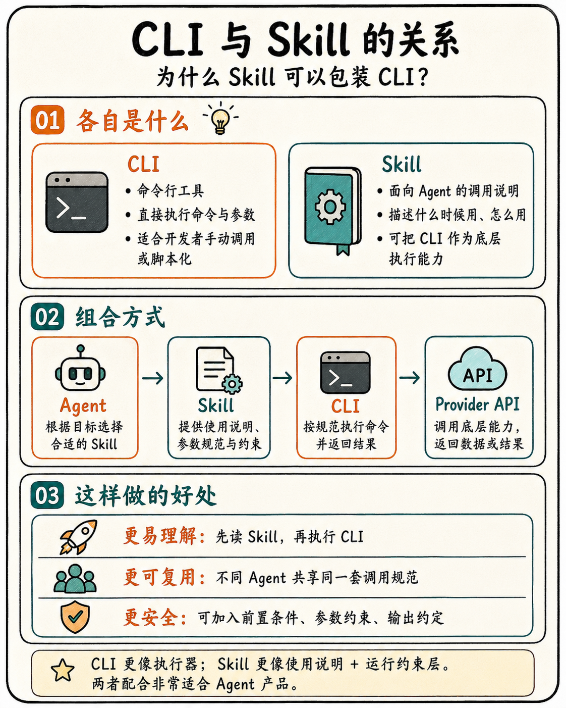
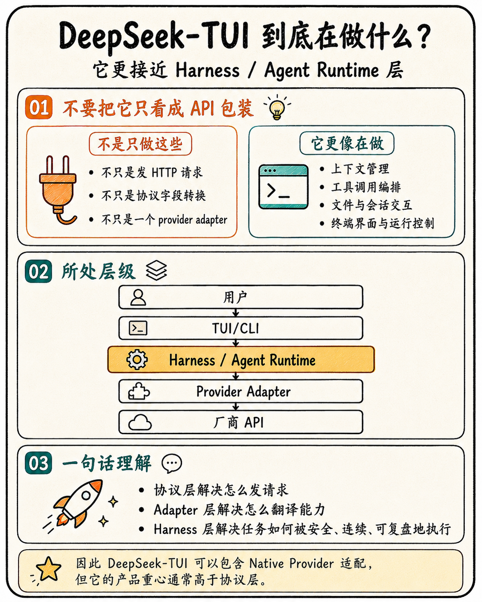

Provider API CLI Suite v18 · 图文教程增强
lark-cli / openai CLI 与 Codex CLI / Claude Code 的区别
这页回答：为什么会存在 lark-cli、openai CLI 这类工具 CLI？它们相比原始 API 高级在哪里？又为什么 Codex CLI、Claude Code 不应被当作普通 API wrapper？
1. 先把 CLI 分成两类
同样叫 CLI，产品层级可能完全不同。lark-cli / openai CLI 更像 API 工具 CLI：把远端平台能力包装成命令；Codex CLI / Claude Code 更像 Agent 编码 CLI：能理解项目、计划任务、调用工具、修改文件和运行命令。

2. 为什么 lark-cli / openai CLI 相比 API 更高级？
API 是最底层机器接口，灵活但繁琐；CLI 把认证、参数、输出、错误处理和常见流程封装成稳定命令，降低了人类开发者、CI 和 Agent 的使用成本。

lark-cli 为什么存在？
把 Lark/飞书消息、文档、Base、Sheets、Calendar、Tasks 等协作资源变成命令，使桌面 Agent、脚本、调试流程可以可靠访问协作系统。
openai CLI 为什么存在？
把 OpenAI Responses、结构化输出、图像、语音等 API 调用变成 shell-native 工作流，方便快速试验、管道处理、CI 和自动化。
3. Codex CLI / Claude Code 为什么是另一类？
Codex CLI 和 Claude Code 不是只把一个 endpoint 包成命令。它们更接近终端里的 Agent Runtime：读取代码库、规划任务、编辑文件、运行 shell、处理 git 工作流，并需要安全策略、权限确认和证据回放。

4. lark-cli 在 MobileCode / Agent 体系里的位置
lark-cli 适合做本地开发验证和 Agent 工具调用入口；产品级 MobileCode 更适合把 Lark OpenAPI 接入 Harness，以便做移动端审批、证据卡、权限隔离和审计日志。

5. 一张表总结
| 工具 | 层级 | 核心价值 | 不是做什么 |
|---|---|---|---|
| lark-cli | API 工具 CLI / 协作工具面 | 把 Lark OpenAPI 变成 Agent 和脚本可调用命令 | 不是完整 Agent Runtime |
| openai CLI | API 工具 CLI / 模型 API 工具面 | 把 OpenAI API 变成终端命令和 shell 工作流 | 不是编码 Agent |
| Codex CLI | Agent 编码 CLI / Harness | 本地读写代码、运行命令、执行开发任务 | 不是单纯 API wrapper |
| Claude Code | Agent 编码 CLI / Harness | 理解代码库、改文件、跑命令、使用 Git/MCP 等工具 | 不是普通 chat CLI |
参考资料
5. 小图补充：CLI、Skill、Harness 怎么串起来
API 工具 CLI、Agent 编码 CLI、Skill 与 Harness 的差异，可以按下面四张小图快速理解。


